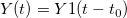
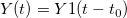
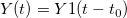

に対して、常にです。t_0t_0
に対して、常にです。t_0t_0最終更新日:2015/08/06
二つの時変信号があると仮定します。Y1 とYが、それぞれワークシートの列Bと列Cに保存されています。
このモデルが二つの信号間の伝搬遅延を計算するのに使われており、すべてのに対して、常にです。t_0t_0
 を計算するために非線形曲線フィットを使いますが、ユーザ定義フィット関数はこのように構築されます。
を計算するために非線形曲線フィットを使いますが、ユーザ定義フィット関数はこのように構築されます。
| 関数名： | fitdelay |
| 実現方式： | ユーザ定義 |
| 独立変数： | X |
| 従属変数： | Y |
| パラメータの名前： | t0 |
| 定義形式： | Origin C |
| 関数: |
Worksheet wks = Project.ActiveLayer(); NLFitContext *pCtxt = Project.GetNLFitContext(); if ( pCtxt ) { static vector vX, vY1; static double nSize; BOOL bIsNewParamValues = pCtxt->IsNewParamValues(); if ( bIsNewParamValues ) { Dataset dsx(wks, 0); Dataset dsy(wks, 1); vX = dsx; vY1 = dsy; nSize = vY1.GetSize(); } double x1; x1 = x-t0; ocmath_interpolate( &x1, &y, 1, vX, vY1, nSize ); } |
ユーザ定義フィット関数の構築について、詳細はこのページをご参照ください。
フィット関数の本体で、アクティブワークシートから直接応答データを読み込みます。よって、ワークシートからフィットを実行します。
キーワード:非線形曲線フィット, 信号処理